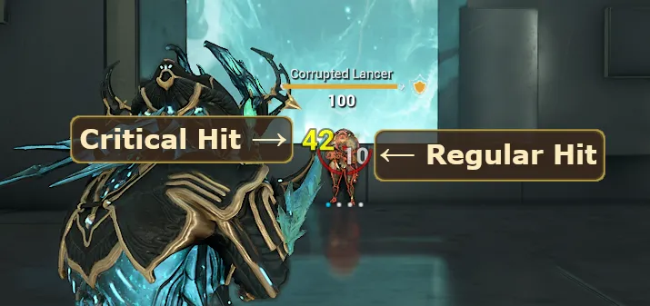
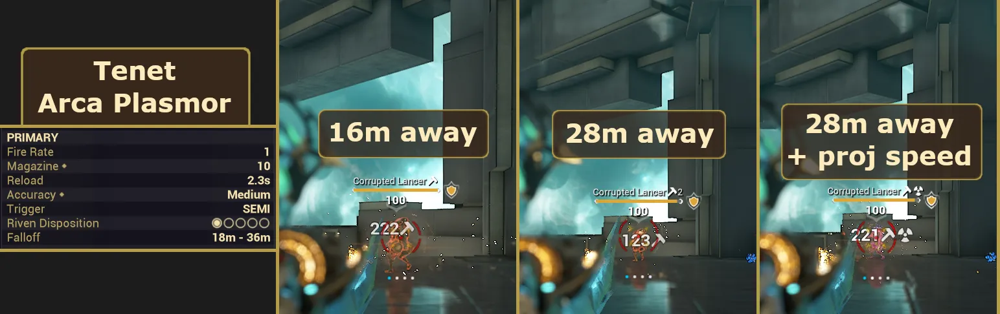
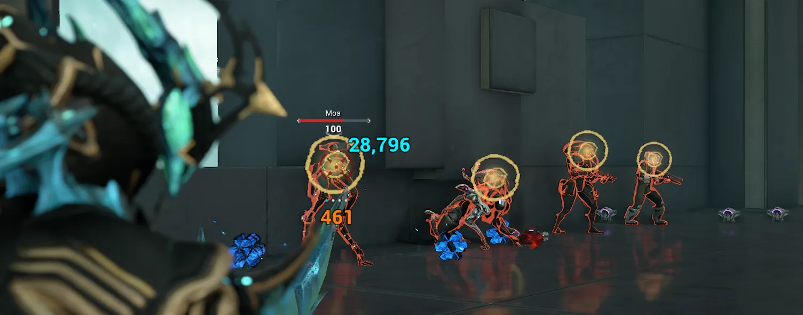
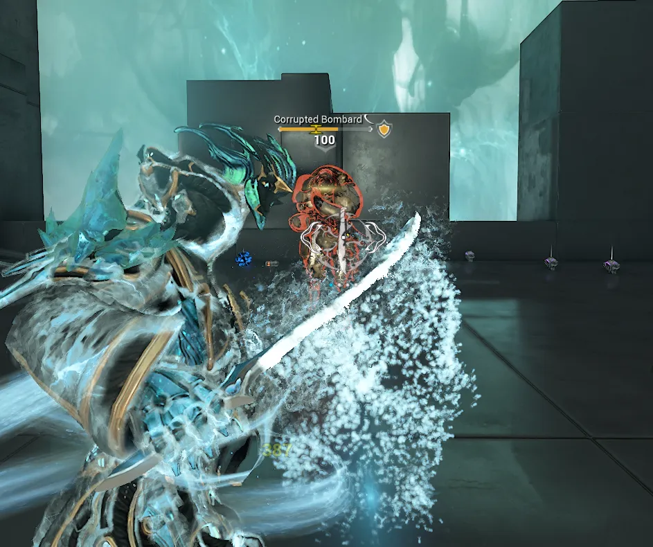

The Basics: Stats & Combat Terminology
Table of Contents
Overview
This page covers some of the core stats and combat terminology in Warframe that I thought was worth bringing up. You'll see a lot of these terms mentioned in build guides or when discussing the game with other players, so it doesn't really hurt to know what they are and understand a bit about them.
Warframe Stats
Shields
Shields are one of your main defensive stats. They recharge automatically when you aren't taking damage and Tenno shields (not enemy shields) have 50% damage reduction. When your shields are fully drained, you also gain a brief period of invincibility called a 'Shield Gate'. This gate negates any overflow damage that you would have taken and its duration scales based on the amount of shield you had recharged since your last shield gate.
Health
Health is your other main defensive stat. Unlike shields, health doesn't regenerate naturally and requires health pickups, mods, or abilities to restore health. When your health reaches zero, your Warframe enters a downed 'bleed-out' state. Allies can revive you before you bleed out, but if the timer runs out, you will die and have to consume a revive, which costs 10% of your affinity earned that mission. In the mid to late game there are additional methods to self-revive, but these won't be discussed here to avoid any spoilers.
Armor
Armor is a secondary defensive stat that reduces damage taken to your health. Damage reduction from armor is calculated as:
DR = Armor ⁄ (Armor + 300)
Note: While Warframe armor is uncapped, enemy armor maxes out at 2700, giving them a maximum of 90% damage reduction.
While Armor is not displayed on your HUD, armored enemies can be identified by their gold health bars. At higher levels, reducing or bypassing armor is very useful for killing enemies quickly.
{kind=link}
Overguard
Overguard is a special defensive stat that grants immunity to statuses and crowd control. It does not benefit from any form of damage reduction. Typically you will see it more often on enemy Eximi units than on Warframes, but there are some limited options for players to generate their own Overguard.
Energy & Efficiency
Energy is your resource for casting abilities. Early on, your main source of energy restoration is picking up energy orbs. Further into the game you'll unlock several other mods and systems that can help with your energy management.
Efficiency is one of your 4 ability stats alongside Strength, Range, and Duration, and it determines how much energy your abilities cost. 100% efficiency is your baseline, and all abilities will cost their standard amounts of energy. If you were to raise your efficiency to 150%, your energy costs for abilities would all be halved. However, you cannot reduce ability costs below 25% of their initial value, no matter how high your efficiency is. This is why the upgrade screen caps out your displayed efficiency at 175%.
Channeled abilities are a special case since their energy costs scale with both efficiency and duration. Negative duration can increase the drain cost for channeled abilities, so you may have situations where you can utilize more than 175% efficiency to bring the energy costs down to the 25% minimum.
Ability Stats
Warframe abilities are scaled by four stats: Strength, Range, Duration, and Efficiency. I've covered Efficiency above, but the other three are fairly self explanatory. Strength affects how powerful your abilities are, Range scales the area they can affect, and Duration changes how long they last. Most builds will prioritize increasing one or two of these stats, depending on which Warframe abilities they want to focus on.
Note: Be aware that not every aspect of an ability may scale with these four stats.
Combat Terms
Critical Hits
Critical hits (crits) are hits that deal increased damage. The chance of a crit occurring is based on the weapon's crit chance, and the damage boost is determined by the weapon's crit damage. In game, standard crits are indicated by yellow damage numbers.
Crit chance can exceed 100%, at which point all hits are guaranteed to crit and now have a chance to upgrade their crits to a higher tier, indicated by orange and then red damage numbers. I cover more on crit tiers in the Advanced Concepts page but the core takeaway here is that having a crit chance over 100% isn't wasteful.
{kind=link}

Status Chance
Status chance is the probability that a hit from your weapon will trigger a status effect, also known as a status proc. Each damage type on your weapon has its own associated status chance and the likelihood of each one proccing is proportional to its percentage of your total damage. For example, a weapon that deals mostly slash damage and a little impact damage will apply slash procs much more frequently than impact procs.
The full breakdown on status effects and what they do can be found on the Damage Types & Status Effects page.
Multishot
Multishot is the chance for your weapon to fire extra projectiles per shot (without consuming extra ammo). These extra projectiles behave identically to the original shot and fire at the same time as the initial shot. Additionally, they can independently crit and apply status procs, which makes Multishot an incredibly valuable stat to mod for.
Beam weapons handle Multishot differently. With Multishot, each damage tick has a chance to deal additional damage. This causes weird interactions with damaging status effects, causing them to be greatly boosted by Multishot affecting both the weapon's status chance and the damage of its status procs.
Punch Through & Follow Through
Punch through is the amount of distance that your shots can pierce through walls and enemies before despawning. Higher punch through numbers can allow you to hit targets through walls and hit multiple lined up targets with a single shot. This is particularly useful when dealing with higher density missions where enemies get packed together.
Follow through is the melee equivalent, and determines how much damage is retained if a single melee attack hits multiple enemies. For example, a follow through of 75% means that the first target hit in a swing will take 100% damage, the second will take 75% (1 x 0.75), the third will take 56% damage (1 x 0.75 x 0.75), and so on.
Projectile Speed & Damage Falloff
Projectile speed is a pretty intuitive stat at first glance. As the name implies, it increases the speed of projectile-type shots, making them fly and hit their targets faster.
Note: In general there are 3 types of shots: Hit-scan (instantaneous), Beam (instantaneous), and Projectile (shots have a flight time before hitting enemies)*
Less intuitively projectile speed also affects damage falloff. Damage falloff is the range at which your weapon's projectiles start dealing reduced damage. For example, the Boar has a falloff range of 15-25m, meaning shots deal full damage up to 15m, deal less damage after that, and reach a minimum 50% damage at 25m and beyond. Falloff ranges and damage minimums vary on a weapon by weapon basis, so do be aware that these numbers will be different for other weapons.
Increasing projectile speed pushes this falloff range further out, extending your weapon's effective damage range.
{kind=link}

Weakpoints
Most enemies have specific body parts that take bonus damage when hit. These are referred to as weakpoints or headshots. For many enemies, the weakpoint is the head, but some enemies have weakpoints in unexpected locations or entirely lack weakpoints. Landing a weakpoint hit is indicated by a sharp crack sound and an X indicator across your reticle.
{kind=link}

Slams
Slams are a special melee attack performed by meleeing in the air while looking down or by performing a heavy attack in the air for a heavy slam. Slam attacks have 2 notable traits compared to regular melee attacks. First, slam attacks ignore follow through and instead have damage fall off from the epicenter; this means that enemies at the edge of the slam radius will take significantly less damage than those directly hit. Second, the radius of the slam AOE scales with the height from which it was performed. Higher heights will lead to massive slam radii.
Combo
Combo is a gauge that tracks the number of consecutive melee hits. Each hit builds your combo meter, and your combo meter will reset after 5 seconds without hitting any enemies. Every 20 hits increases the combo tier, from Tier 2 at 20 hits up to Tier 12 at 220, with each tier providing a damage multiplier equal to its tier number.
There are mods, arcanes, and weapons that can help generate combo, extend the 5 second window, reduce combo lost, or even grant a fixed initial combo value. All of these options can become very valuable if you're looking into melee focused gameplay.
Heavy Attacks & Tennokai
Heavy attacks are powerful melee strikes that consume combo on swing. By default, heavy attacks consume 100% of your combo, but you can mod for heavy attack efficiency which lowers the amount of combo consumed down to a minimum of 10%. Heavy attacks also have an extra windup animation but this can be reduced with heavy attack wind up speed mods.
Tennokai is a special combat art which allows you to perform heavy attacks without consuming combo and with a faster windup animation. With a Tennokai mod, while landing melee hits you'll occasionally gain a brief 2 second window to perform a Tennokai heavy attack. This is indicated by a burst of energy effects around the Warframe and a Tennokai symbol around your reticle. Mentor's Legacy, your first Tennokai mod is earned on completion of the Whispers in the Walls quest, and the remaining Tennokai mods can either be farmed from Cambire, Deimos (Alchemy) or bought in a bundle from the Market for 100 plat.
Note: While yes, these mods are tradeable. The price of the two rarest Tennokai mods (Discipline's Merit & Dreamer's Wrath) is close to 100p, so if you are planning to buy those two, you may as well buy the full set from the Market.
{kind=link}

CO & GunCO
Condition Overload (CO) and its ranged equivalents (GunCO) refer to a group of mods that scale your weapon's direct damage based on the number of unique status effects on a target. Condition Overload is the melee version and GunCO refers to the 3 Galvanized mods (Aptitude, Savvy, and Shot) that affect primary and secondary weapons. These mods have enormous damage potential in builds that can consistently apply multiple status types. However, there are a number of unique interactions worth knowing about which can be found here.
Primers
A primer is any weapon, ability, or companion that's good at applying multiple debuffing status effects to an enemy. Since CO and GunCO scale with the number of unique status types on a target, a good primer can really increase your damage output for your main weapons. Some common primers include the Epitaph and Nukor secondaries and the Diriga and Hound companions.
Top